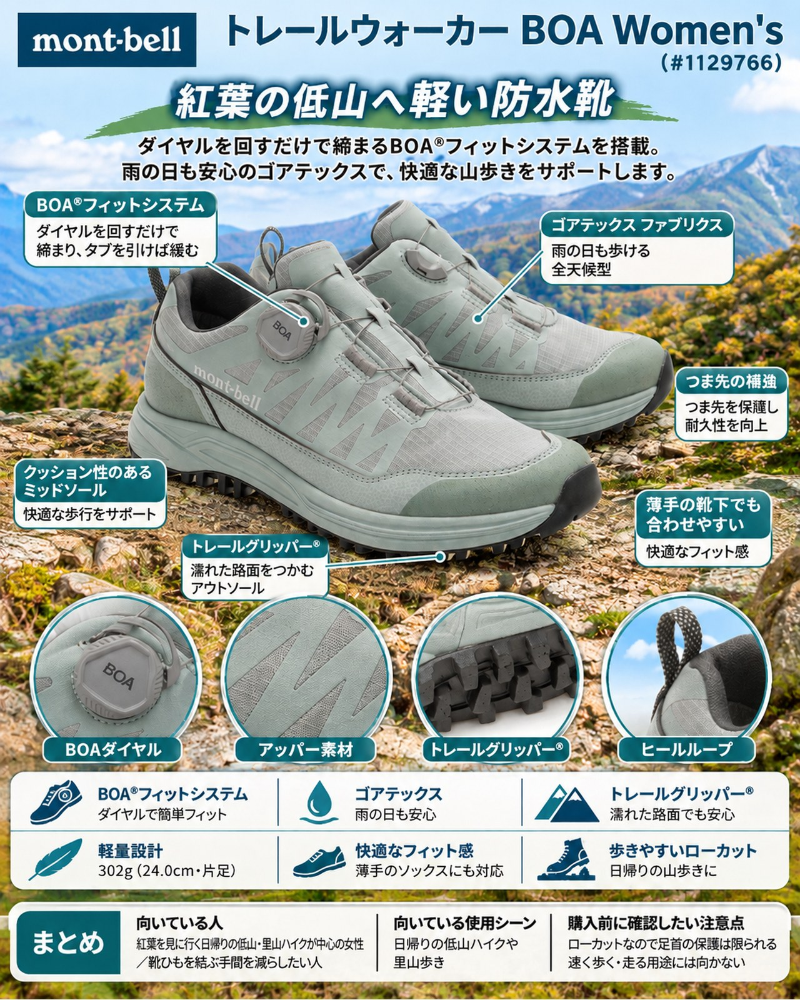

10月の終わり、紅葉の見ごろは山麓から低山へと下りてきました。高い山は結氷と初冠雪の時期に入り、週末の行き先を近郊の低山や里山に切り替える人も多いはずです。一方で、雨の日が挟まり、日没は17時ごろまで早まっています。登山口でもたつかずに歩き出し、明るいうちに下りてきたい季節です。
導入
10月の終わり、紅葉の見ごろは山麓から低山へと下りてきました。高い山は結氷と初冠雪の時期に入り、週末の行き先を近郊の低山や里山に切り替える人も多いはずです。一方で、雨の日が挟まり、日没は17時ごろまで早まっています。登山口でもたつかずに歩き出し、明るいうちに下りてきたい季節です。
今回紹介するのは、モンベルの「トレールウォーカー BOA Women's」（品番 #1129766）です。公式は「軽量で、低山ハイキングやキャンプに適した全天候型シューズ」と説明しています。靴ひもの代わりにBOA®フィットシステムを使い、ダイヤルを回してフィットを調整します。紅葉狩りを兼ねた日帰りの低山ハイクや、山麓のキャンプで、軽くて脱ぎ履きの楽な防水シューズを探している女性に向いた1足です。
これまでYAMA FITで紹介してきた靴は、ミッドカットや本格的な登山靴が中心でした。今回は「軽さと手軽さ」で選ぶローカットとして見ていきます。
基本スペック
※仕様と価格はモンベル公式オンラインストアの商品ページ（2026年10月31日確認）とフットウェアカタログ2025による。
| 項目 | 内容 |
|---|---|
| 商品名 | トレールウォーカー BOA Women's |
| 品番 | #1129766 |
| 価格 | ¥22,600（税込） |
| 重量 | 302g（24.0cm・片足） |
| サイズ | 22.0〜26.0cm（0.5cm刻み） |
| ワイズ | レギュラー |
| カラー | ブルーグリーン（BGN）、ブラック（BK） |
| アッパー | ポリエステル、合成皮革、TPU |
| ライニング | ゴアテックス ファブリクス |
| アウトソール | トレールグリッパー® |
| フィット調整 | BOA®フィットシステム（ワイヤーレース 0.81mm） |
ダイヤルを回すだけで締まり、タブを引けば緩む
最大の特徴はBOA®フィットシステムです。公式は、ダイヤルで素早くフィットを調整でき、タブを引っ張ることで素早く緩められると説明しています。一部の紹介では、靴を脱ぐ機会が多いキャンプやレジャーシートでのハイキングに向く点、脱ぎ履きが簡単で休憩やテントの出入りがスムーズな点も挙げられています。山頂で靴を脱いで休んだり、山麓の温泉や茶屋に立ち寄ったりする紅葉ハイクで、手間が減るのはうれしいところです。
ゴアテックスで雨の日も歩ける全天候型
ライニングにゴアテックス ファブリクスを使い、防水透湿性を持たせています。公式はアッパーに柔軟で摩耗に強いメッシュを使い、合成皮革と樹脂のシートで補強していると説明しています。雨の翌日のしっとりした登山道や、濡れた落ち葉の道でも、足を乾いた状態に保ちやすい作りです。
濡れた路面をつかむトレールグリッパー®
アウトソールはモンベル独自のトレールグリッパー®です。カタログでは、接地面との密着性を高めるため反発力を抑えた独自配合のコンパウンドを使い、岩肌の細かな凹凸に食い込んでグリップすると説明しています。一般にグリップの高いソールは摩耗が早いものの、配合の工夫で既存のソールと同等の摩耗強度にしているとしています。一部の紹介でも、ぬれた路面や土の上で地面をつかみやすい点が挙げられています。
薄手の靴下でも合わせやすい
公式は薄手のソックスにも合わせられるとしています。厚手の登山用ソックスが前提にならないので、普段の服装に近いスタイルで出かけやすい1足です。
デメリット・注意点
- ローカットなので足首の保護は限られる：公式の機能説明ではローカットモデルとされています。足首まで覆わないため、岩や木の根が多い道、荷物の多い山行では、ミッドカット以上の登山靴のほうが安心です。小石や落ち葉が入りやすい点も、ローカット全般に共通する注意点です。
- 速く歩く・走る用途には向かない：山を速く走るより、日帰りハイクやキャンプ、雨の日の外出に向くとされています。トレイルランニングやスピードハイク用の靴を探している人には別の選択肢があります。
- 想定は日帰りの低山：公式のカテゴリーは「登山靴（日帰り向け）」で、説明も低山ハイキングやキャンプ向けです。冠雪や凍結が始まった高い山に、この靴で向かうのは避けましょう。
- 厚手の靴下を使うならサイズを確認：薄手のソックスに合わせられる設計のため、冷え込む朝に厚手の靴下を履きたい人は、その靴下で試し履きしてサイズを選ぶと安心です。
- ワイズはレギュラーのみ：Women'sの足囲はレギュラーです（Men'sにはワイドモデルがあります）。幅広の足の人は試し履きで確かめてください。
向いている人・向いていない人
◎向いている人
- 紅葉を見に行く日帰りの低山・里山ハイクが中心の女性
- 靴ひもを結ぶ手間を減らし、休憩や立ち寄りで気軽に脱ぎ履きしたい人
- 雨の日や雨上がりも歩ける、軽い防水シューズがほしい人
- 山麓のキャンプとハイキングを1足で済ませたい人
△向いていない人
- 岩場が続く山や、重い荷物を背負う縦走に行く人
- 足首までしっかり支える靴を求める人
- 速く歩く・走る山行が中心の人
- 冠雪や凍結がある時期の高い山に行く人
まとめ
モンベルの「トレールウォーカー BOA Women's」は、片足302gの軽さ、ゴアテックスの防水透湿性、ダイヤルで締めてタブで緩めるBOA®フィットシステムを組み合わせた、低山とキャンプ向けのローカットシューズです。足首の保護や岩場での安定感は登山靴に及びませんが、日没の早い晩秋に、登山口でさっと履いて歩き出し、紅葉の低山を気軽に楽しむにはちょうどよい1足です。
この記事で紹介した商品
価格・重量・在庫は各ブランド公式サイトの記載（確認日つき）にもとづきます。商品を押すと、購入先を選べます。
この記事にはアフィリエイト広告が含まれます。リンク先での購入により、当サイトが報酬を受け取る場合があります。山行の前には、最新の気象とルートの状況を必ずご確認ください。